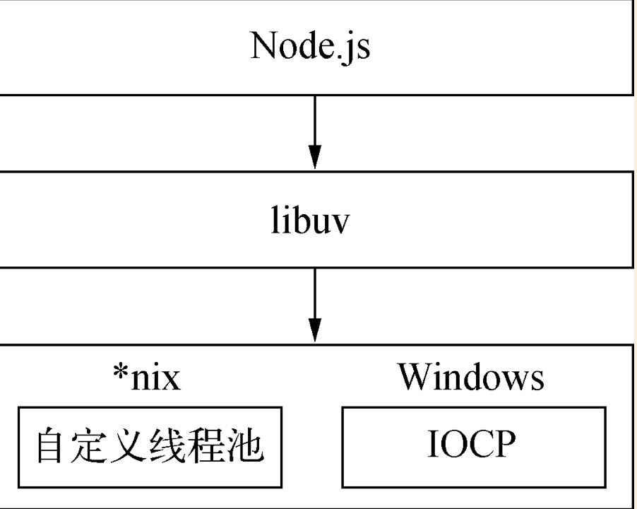
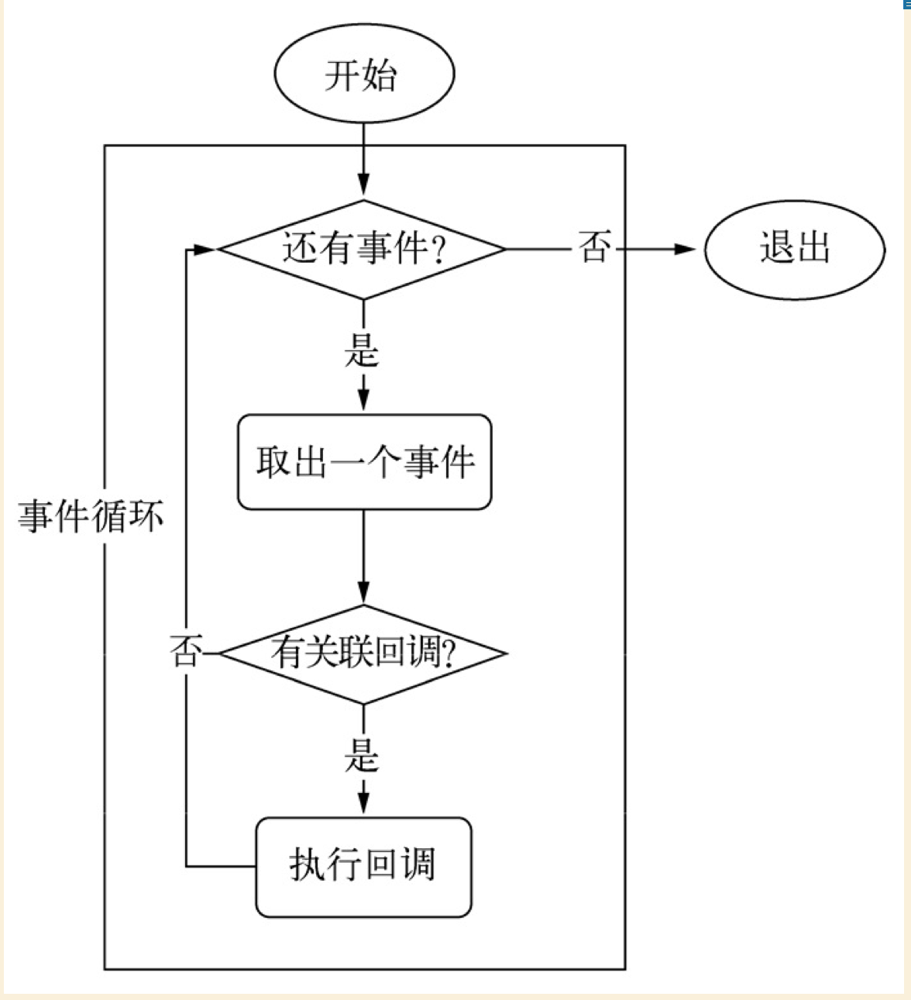
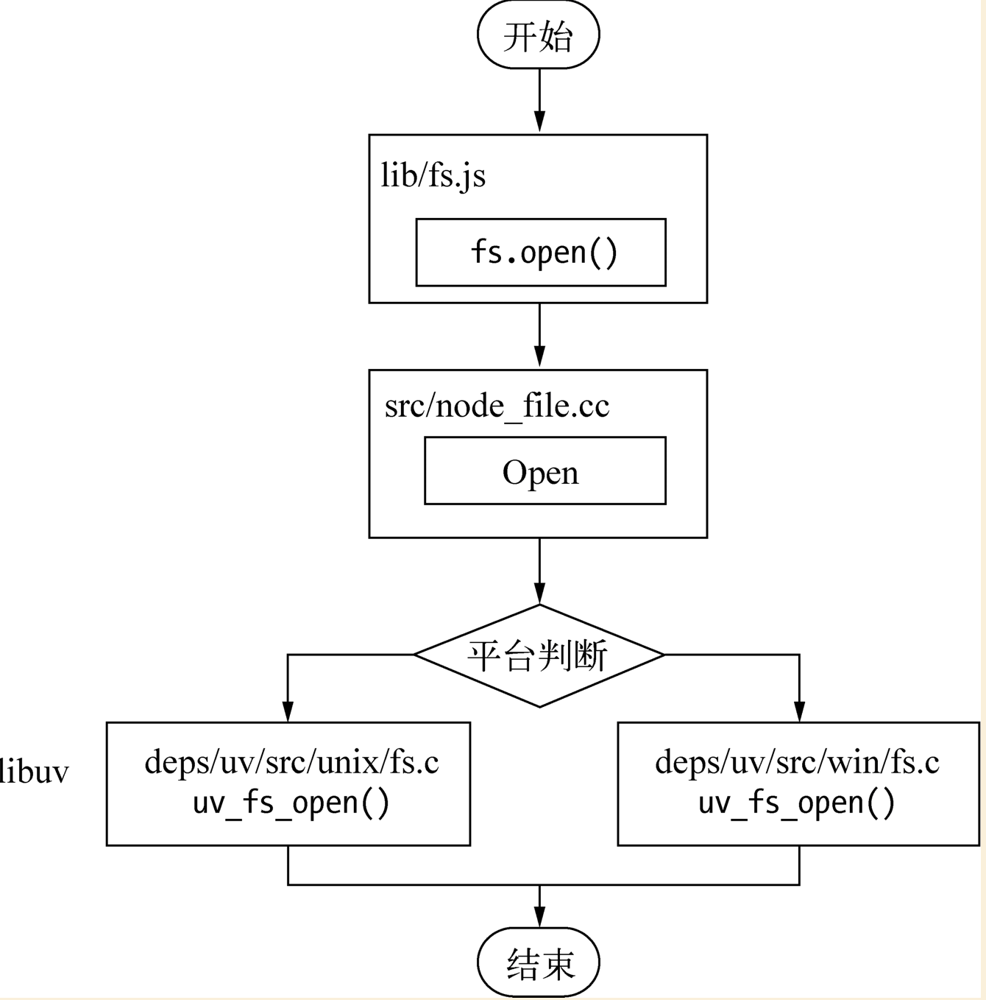
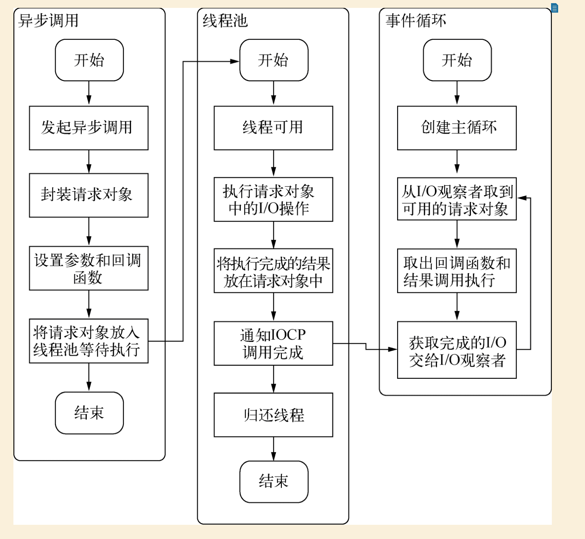

在Node中异步I/O是何等份量大伙多多少少应该知道点，没吃过猪肉难道还没见过猪跑么？
Node虽然是单线程，但这里的单线程仅仅只是Javascript执行在单线程中罢了。
在Node中无论是何种平台，内部完成I/O任务的另有线程池。如下图所示：

那Node是如何实现异步I/O的呢？
我们先看看其他内容，转移下注意力。
事件循环
在进程启动时，Node会创建一个类似while(true)的循环，每次循环的过程我们称之为Tick。这个过程是为了检查是否有事件待处理，如果有则取出事件及相关的回调函数并执行，然后再进入下一个循环直到没有需要处理的事件则退出进程。如下图所示：

观察者
在每个Tick的过程中，如何判断是否有待处理的事件呢？那么就需要观察者登场啦。🎉🎉🎉
在每个事件循环中都会有一个或者多个观察者，判断是否待处理的事件就是向观察者询问是否有要处理的事件。就像咱们下馆子一样，馆子的厨房一遍一遍的做菜，厨房就是事件循环。那么他们做什么样的菜就需要询问服务员，服务员会告诉厨房有没有要做的菜，这里服务员便是观察者。具体做什么样的菜，就是咱们这些下馆子的人来决定的。
请求对象
一般，非异步回调函数是有我们自行调用。如下所示：1
2
3
4
5function processEvt(list, callback) {
for (var i = 0; i < list.length; i++) {
callback(list[i], i, list);
}
}
但对于Node的异步I/O调用而言，回调函数却不是我们开发者来调用，那么我们发出调用到回调函数被执行，这中间发生了什么呢？
事实上，从JavaScript发起调用到内核执行完I/O操作的过渡过程中，存在一种中间产物，这就是请求对象。
下面以fs.open() 举例，探索Node与底层之间如如何执行异步I/O调用以及回调函数是如何被调用执行的。1
2
3fs.open('./files/test.txt','a',(err,fd)=>{
//各种操作
});
那fs.open()方法内部是什么样呢？1
2
3
4fs.open = function (path, flags, mode, callback) {
//......
binding.open(pathModule._makeLong(path), stringToFlags(flags), mode, callback);
}
从这两段代码中不难看出来JavaScript层面的代码通过node核心模块，核心模块调用C++内建模块，内建模块又会做什么呢？看下图：

内建模块会通过libuv进入系统调用，这也是Node里最经典的调用方式。
将libuv作为封装层，有两个平台的实现，实质上都是调用了uv_fs_open()方法，在uv_fs_open()的调用过程中，我们创建一个FSReqWrap请求对象，会把从JavaScript传入的参数和当前方法都封装在这个请求对象中，注意：回调函数会被设置在这个请求对象的oncomplete_sym属性上。
请求对象包装完毕后，在windows下，调用QueueUserWorkItem()方法将FSReqWrap这个请求对象推入到线程池中等待执行。QueueUserWorkItem()方法接受三个参数，第一个参数是将要执行的方法的引用，第二个参数是方法运行时所需要的参数，第三个参数是执行的标识。
当线程池中有可用线程时，我们会调用传入的方法，根据参数调用底层相应的函数。
至此，JavaScript调用就可以返回了，由JavaScript层面发起的异步调用第一阶段就结束了。JavaScript线程可以继续执行当前任务的后续操作，当前的I/O操作在线程池中等待执行，不管它是否阻塞I/O，都不会影响JavaScript线程的后续执行，如此便达到了异步的目的。
请求对象是异步I/O过程中最重要的中间产物，因为所有状态都保存在这个对象中，包括送入线程池等待执行以及操作完毕后的回调处理。
执行回调
线程池中的I/O操作调用完毕后会将结果储存在某个属性上，通过调用PostQueuedCompletionStatus()通知IOCP，告知当前对象操作已经完成，并将线程归还线程池。
我们通过GetQueuedCompletionStatus()提取。
在这个过程之，我们会调用事件循环的I/O观察者，在每次Tick的执行中，它会调用GetQueuedCompletionStatus()方法检查线程中是否有执行完的请求，如果存在，则会把请求对象加入的I/O观察队列中，将其当作事件处理。I/O观察者回调函数的行为就是取出请求对象的结果属性作为参数，取出oncomplete_sym属性作为方法并执行。
以上便是整个异步I/O的流程，看图：

那么读到这里，有没有醍醐灌顶？原来这就是Node中异步I/O的整个过程。
回到Node是如何实现异步I/O的问题，聪明如我的小伙伴们应该知道答案了吧。
事件循环、观察者、请求对象、I/O线程池共同构成了Node异步的基本要素。
ps:参考朴灵的《深入浅出》